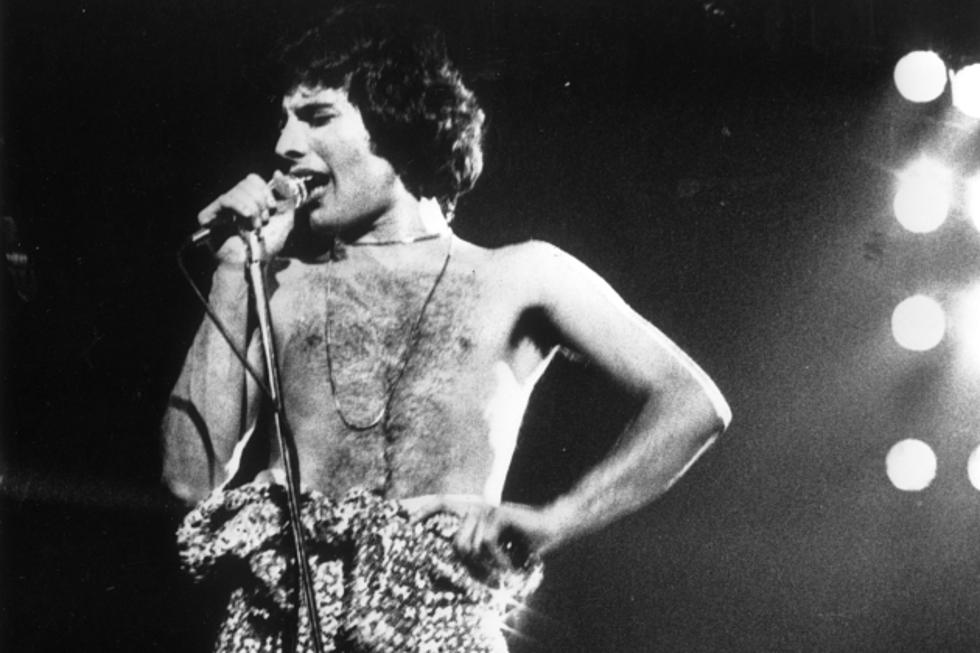

Freddie Mercury, Farrokh Pluto Bulsara (Petra - Tanzânia,
5 de setembro de 1946 — Londres, 24 de novembro de 1991).
Linha do tempo da vida de Freddie Mercury
1946:
Nascido em 5 de setembro na Cidade de Pedra, Zanzibar (atual Tanzânia)
1970:
Roger Taylor e Brian May unem forças com Fred Bulsara,
antigo vocalista líder da banda Sour Milk Sea. Após considerarem vários nomes,
decidem por Queen. Bulsara mudou seu nome para Freddie Mercury.
Em fevereiro/1971, o baixista John Deacon juntou-se ao grupo.
Eles fizeram alguns shows e ensaiaram juntos durante dois anos,
enquanto terminavam a faculdade.
1971:
Em 08/01, o Queen tocou no The London Marquee pela primeira vez.
1972:
Em 30/06, o Queen começou a gravar no Trident Studios, em Londres,
o seu álbum de estreia, que seria lançado no ano seguinte.
1973:
Trident e EMI assinaram um contrato de gravação com o Queen.
Em julho, foi o lançamento de ‘Queen’, o primeiro álbum da banda
E a banda embarcou para sua primeira turnê.
Em 13/09, o Queen apresentou-se no Hipódromo Golden Green,
em North London, e o show foi gravado pela BBC.
Foi a primeira gravação profissional de um concerto da banda.
1974:
Fevereiro marcou a apresentação memorável do Queen no lendário canal britânico BBC,
no show “Top of The Pops”, tocando ‘Seven Seas of Rhye’.
A música tornou-se o primeiro grande sucesso da banda,
figurando na lista das Dez Mais.
A banda lança ‘Queen II’, que alcançou a quinta posição nas paradas britânicas.
Eles realizaram uma turnê nos EUA pela primeira vez,
fazendo a abertura da banda Mott the Hoople.
Em novembro, lançaram seu terceiro álbum: ‘Sheer Heart Attack’,
apresentando ‘Killer Queen’, outro grande sucesso!
1977:
Em outubro, o Queen lança seu sexto álbum: ‘News of the World’,
que alcança as Dez Mais com a inesquecível canção ‘We Are The Champions’
juntamente com ‘We Will Rock You’.
1985:
Em 13/07, o Queen fez história com a sua apresentação que roubou a cena no Live Aid,
o concerto beneficente que levantou fundos para aliviar a fome da população etíope.
1989-1991:
Em 18/02/1990, o Queen recebeu o prêmio BRIT pela ‘Notável Contribuição à Música’,
no Dominion Theatre, em Londres. Foi a última aparição pública de Freddie com a banda.
Entre 1989 e 1991, o Queen lançou três álbuns que foram número 1 nas paradas de sucesso
do Reino Unido: ‘The Miracle’, ‘Innuendo’ e ‘Greatest Hits II’.
1991:
Faleceu no dia 24 de novembro com 45 anos em Londres, Reino Unido